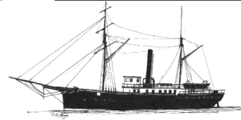
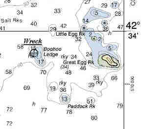

Link Index
MWDC
Home Page
Shipwrecks Page
Alice M. Colburn
Alice M.
Lawrence
Ardandhu
Barge and Crane
California
Charles S. Haight
Chelsea
Chester Poling
City of
Salisbury
Corvan
Dixie Sword
Edward Rich
French Van
Gilder
Henry Endicott
Herbert
Herman Winter
Hilda Garston
HMCS St. Francis
James
Longstreet
John Dwight
Kershaw
Kiowa
Lackawanna
Lunet
Mars
Pemberton
Pendleton
Pinthis
Port Hunter
Pottstown
Romance
Seaconnet
Trojan
USS Grouse
USS New
Hampshire
USS Triana
USS Yankee
USS YSD
Vineyard Sound
Lightship |

Description: U.S. Revenue
Cutter; Iron Hulled,
Dimensions: length
- 142 ft. , width
- 23 ft. ; depth
- 9 ft.
Tonnage: gross - 250 , other
- Displacement - 210.
Propulsion: Primary - Steam, single
propeller;
Secondary
- topsail schooner rig
Machinery: 2
cylinder compound steam engine; (1887) received new boiler in NewYork
Cargo:
The Shipwreck
Date Sunk: January 6, 1892.
Cause: Stranded.
Location:Manchester, northwest side of Boo Hoo Ledge.
Coordinates: Latitude,
42o - 33' - 50"N. Longitude,70o - 44' - 52"W .
Loran:
The morning of the sixth was overcast
but clear as the Albert Gallatin prepared to leave Kittery, Maine, enroute to
Provincetown, Massachusetts. Two of her complement of seven officers were missing
otherwise it was just another, of hundreds, of patrols she had made on her station between
Portsmouth, New Hampshire, and Holmes Hole, Massachusetts.
At 8:50AM, on a southerly course, she passed the Salvages, a cluster of
ledges off Cape Ann. At 9:55AM the weather became thick and soon thereafter snow began to
fall. Intending to make the safety of Gloucester before visibility deteriorated, the
steamer's course was changed. At 11:00AM land was sighted, the engines stopped and a
sounding of 12 fathoms taken. The Pilot, thinking he was off Kettle Bottom Island, made a
course change due East for Eastern Point.
But it was here that the mistake was made. What the pilot thought was
Kettle Bottom Island was in fact Great Egg Rock. At 11:15 the Cutter struck hard on Boo
Hoo Ledge. All attempts to free her were in vain. Soon, pounding seas carried away her
skylights and she began to fill. As the vessel rolled her smokestack toppled to starboard
striking the ships Carpenter, Mr. J. Jacobson, killing him instantly. Captain Gabrielson
order his men to the boats and all remaining hands got off without incident, making
landfall in a rocky cove at Eagle Head.
By 4:30PM the storm had subsided sufficient to see that the vessel had
broken in two and was completely submerged.
Back to Top
Dive
Site Conditions
Depth in feet: maximum - 50 ; minimum
- 10 .
Visibility in feet: average
- 25 .
Click on the image to go to the MapTech Map Server,
for additional navigation information. 
Salvage
Salvage attempts have
reduced the steamer's hull to little more than scattered frames and plates over broken
ledge, crevices and rocks. As with all New England dive sites, visibility is a tricky
subject, however most reports indicate no more than 30 feet. The amount of algae growth
will be dependant apon the time of year and the amount of Sea Urchins. New England's
Legacy of Shipwrecks, Keatts, 1988, reported the wreckage free of growth, in effect an
urchin barren. However with increased commercialization of the marine invertebrate it's
unknown whether those observations still apply.
Artifacts Recovered include a deck prism, used to transfer sunlight
into below deck spaces. The brass letter "G" from Gallatin's hull and a sword
corroded into its scabbard.
Back to Top
Historical Background
Constructed: year - 1871
; where - Buffalo, N.Y.
builder
- David Bell
Construction details: Iron Hull, Mahogany Decks
Crew: 39 ;
Master: Capt. Eric Gabrielson
Owners: United
States Revenue Cutter Service
Home or Hailing Port: Boston, Massachusetts
Former Name(s), date(s): .
Official number: . Country: U.S.A.
Other Comments:
* - Armed with 2, 6 pound, brass
"Whitworth" carriage guns, mounted in a broadside.
* - Cruising Grounds - From Portsmouth, N.H. to Holmes Hole, Mass.
*- Nov. - Dec. of 1881 the cutter recieved a $10,000 overhaul.
* - The Albert Gallatin was considered one of the United States Revenue Cutter
Service's most able seagoing vessels. In her career she saved at least $50,000,000 worth
of shipping from total destruction.
* - Captain Gabrielson served in the Spanish American War as a volunteer naval
officer. He commanded the Revenue Cutter Dexter when that vessel went to the aid of the
City of Columbus which wrecked January 18, 1884 off Gay Head, Martha's Vineyard,
Massachusetts, with the loss of 99 lives, mostly women and children. * - The
Gallatin was the first Revenue Cutter lost since the end of the Spanish American War.
Back to Top
Salvage
The February 27th
edition of the New York Times reported the Government preparing to investigate
charges of fraud in connection with the sale of the wreck for salvage. "Amoung
the bids received were two reporting to be from the same firm". One of which
was the highest of all. Notice was sent of it's acceptance to which their reply stated
that if such a bid had been received then it was a forgery. A Nova Scotia wrecking
company, the existence of which could not be found, made the next highest bid. The next in
the line of bids was from the first wrecking company.
However subsequent reports state that two months after the sinking, the
Collector of Customs at Boston transferred title of the Albert Gallatin to
three Boston men, who inttended to salvage her. Prior to the disaster the steamer had been
valued at $50,000. The winning bid was $679.
Back to Top
Sources:
MapTech
Mapserver
MBUAR; File Number MA-8237
New York Times; January 7, 1892
New England's Legacy of Shipwrecks; Keatts, 1988
Merchant Vessels of the United States; 1877
Back to Top
These files are under construction. Any
information, specifically dive site related, would be greatfully appreciated.
Send comments to: Chris Hugo
Copyright © 2000 by Christopher C. Hugo
Massachusetts Board of Underwater Archaeological Resources
All Rights Reserved
|